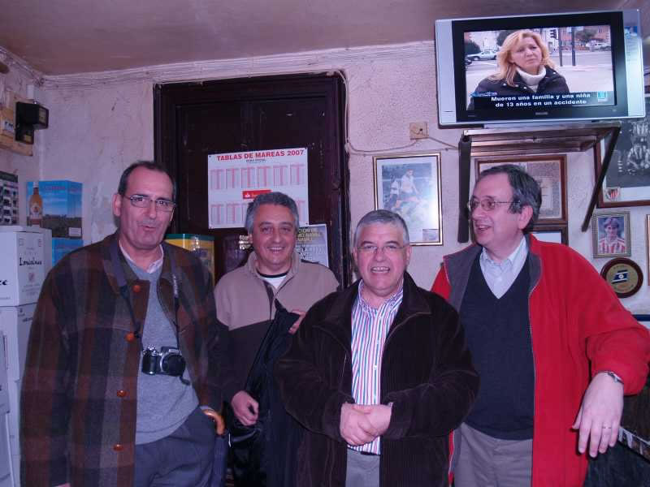

Encuentro en SantoñaA estas alturas de vinos y anchoas y queso y.... ya no sé quién son éstos, quién es la de la tele ni quién soy yo, porque no se si esta es la toma buena o es ESTA OTRA.... y lo que me despista más es como mira Bitaube a Lacaci mientras los otros se ríen... ¿No será Rosita de Tokio...? |
|
 |